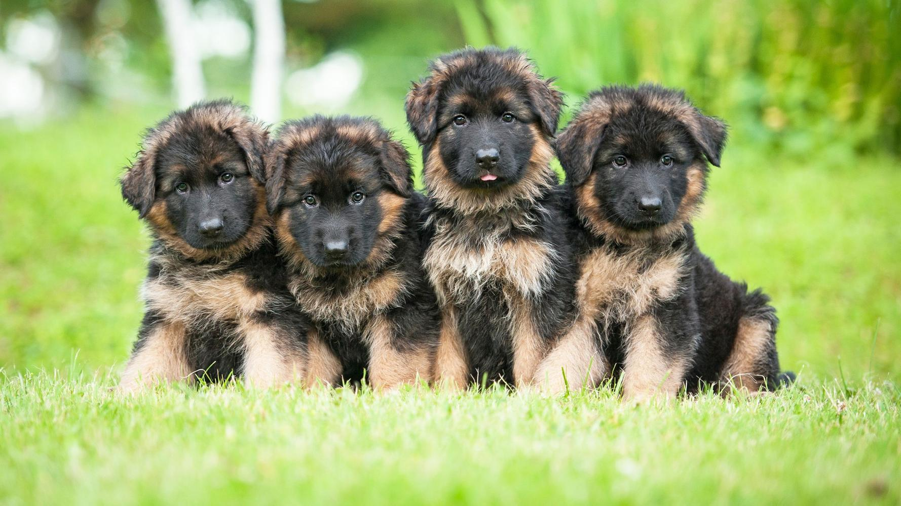

German Shepherd Trivia!

How well do you know your four-legged friend?
What were German Shepherds originally bred for?
- A. Herding sheep
- B. Herding cattle
- C. Herding goats
- D. Hoarding objects
What type of work can German Shepherds be used for?
- A. Search and Rescue
- B. Disability assistance
- C. Protection
- D. All of the above
Which U.S. President has owned a German Shepherd?
- A. Barack Obama
- B. Joe Biden
- C. John F. Kennedy
- D. Jimmy Carter
What is the name of this canine film star that popularized German Shepherds?
- A. Rex the Wonder Dog
- B. Won Ton Ton
- C. Rin Tin Tin
- D. Ace the Wonder Dog
Great job! Click the link below to check your answers!
Answer Key